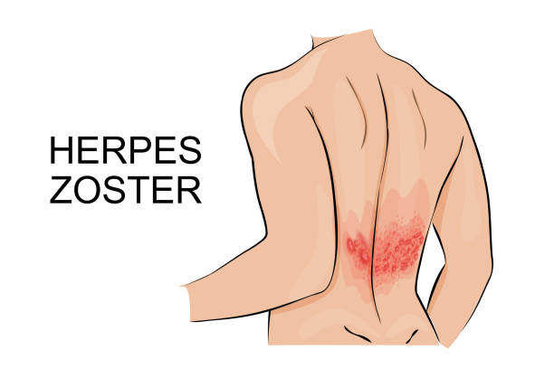

Penanganan Herpes Zoster

1. Pemeriksaan Herpes Zoster
Pemeriksaan Herpes Zoster dilakukan oleh dokter dengan melihat kondisi kulit, bentuk ruam, dan gejala yang dialami pasien. Dokter juga dapat menanyakan riwayat kesehatan pasien. Pada kondisi tertentu, pemeriksaan laboratorium dapat dilakukan untuk membantu memastikan diagnosis.
2. Pengobatan Herpes Zoster
Pengobatan Herpes Zoster bertujuan untuk mengurangi gejala, mempercepat penyembuhan, dan mencegah komplikasi. Beberapa penanganan yang dapat diberikan oleh dokter antara lain:
- Obat antivirus sesuai resep dokter.
- Obat pereda nyeri untuk mengurangi rasa sakit.
- Obat untuk membantu mengatasi rasa gatal apabila diperlukan.
- Perawatan kulit pada bagian yang mengalami ruam.
3. Perawatan di Rumah
Selain menjalani pengobatan dari dokter, penderita dapat melakukan perawatan di rumah, seperti:
- Menjaga kebersihan kulit yang terkena ruam.
- Menggunakan pakaian yang longgar dan nyaman.
- Mengompres bagian yang terasa nyeri menggunakan kain bersih dan dingin.
- Tidak menggaruk atau memecahkan luka lepuh.
- Istirahat yang cukup dan mengonsumsi makanan bergizi.
4. Kapan Harus ke Dokter?
Segera periksakan diri ke dokter apabila muncul ruam yang dicurigai sebagai Herpes Zoster. Pemeriksaan lebih cepat penting agar pengobatan dapat diberikan sedini mungkin. Jika ruam muncul di sekitar mata, terdapat gangguan penglihatan, atau nyeri yang berat, segera cari pertolongan medis.